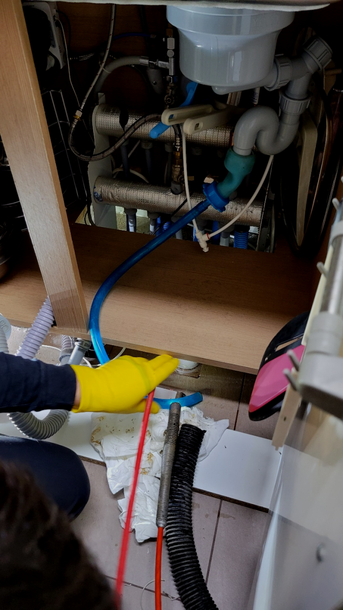
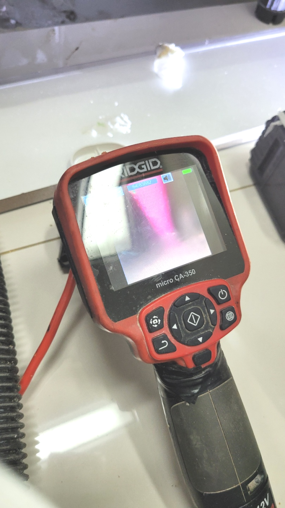
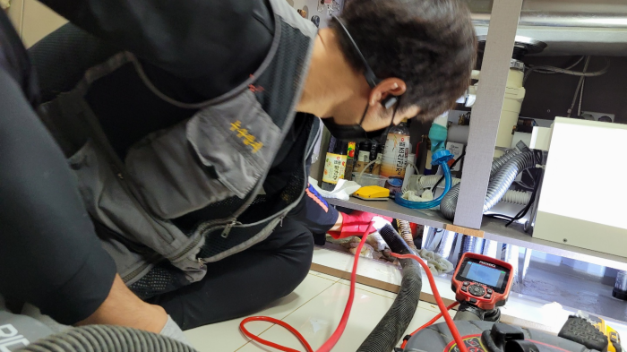
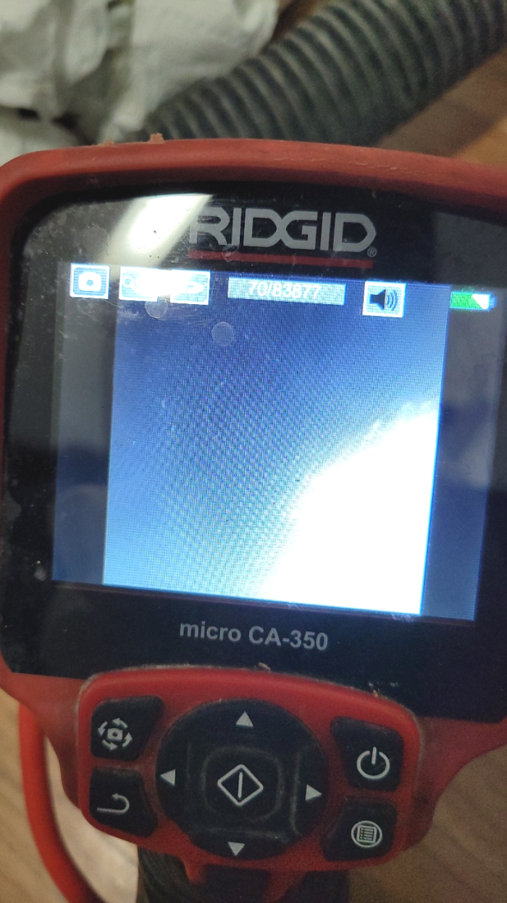
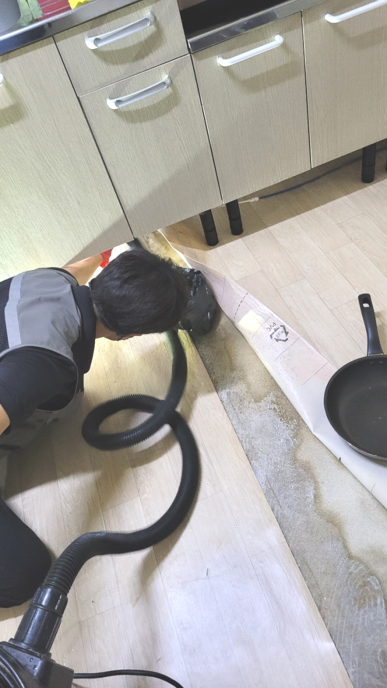
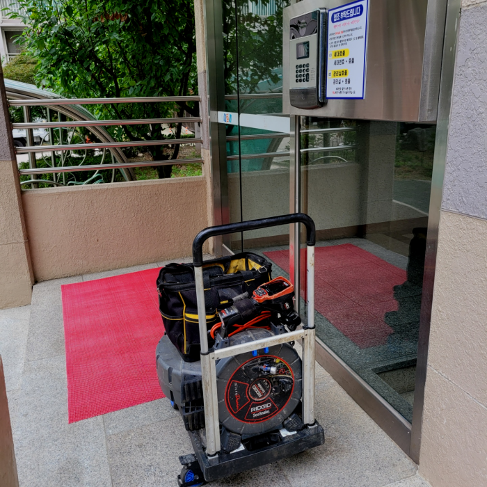

🏠 부평 부개동 주방배수구막힘 작전동 서운동 하수구뚫음 전문설비
용인 싱크대막힘 전문 시공 후기

📋 작업 개요
- 위치: 용인
- 서비스 유형: 싱크대막힘, 변기막힘, 하수구막힘, 배관막힘, 역류해결, 뚫는업체, 배관청소, 고압세척
- 작업 일시: 2024. 2. 1. 16:20
- 업체명: 하수구수사대 (010-5615-2118)
🔍 문제 상황
반갑습니다!
설비전문업체 "하수구수사대"를 찾아주셔서 감사드립니다.
물을 흐르는 곳에서 잘 사용을 하시다가 어느 순간 갑자기 하수물이 잘 안내려가고나 물이 역류하는 경우는 많은 곳에서 일어 날 수가 있습니다.
부평 부개동 주방배수구막힘 작전동 서운동 하수구뚫음 전문설비

🔎 원인 분석
💡 전문가 진단: 부평 부개동 주방배수구막힘 작전동 서운동 하수구뚫음 전문설비
그래서 어떠한 물질이 배수를 막고 있는지를 내시경 카메라를 통해서 확인을 하는 것이 필요합니다. 막혀있는 물질이 무엇이냐에 따라서 작업의 방향이 결정이 되고 또한 어떠한 장비를 사용해야 할지를 판단할 수 있습니다.
작업 전에 충분하게 설명을 드리니 걱정만 하지 마시고 일단 물어봐 주세요. 배수관배관은 집집마다 다르게 생겨 있으며 배관을 막고 있는 원이도 집집마다 다르기에 작업 난이도에 따라 가격이 책정됩니다.
전문적으로 원활하게 해결방안이 되지 않아요! 뚫어내기 위해선 최신기계도 없으면 안되고 체계적으로 해결방안을 하지 않는 곳도 확인하고 결정하시는게 좋을 듯합니다. 준비되어 있지 않은 곳에서 그냥 뚫게 된다면 앞서말씀드린 것처럼 혼자 셀프로 뚫는것과 같은 현상이 일어나는거죠. 핵심이 되는 문제는 없어지지 않기 때문에 빠른 시일내에 재발하게 된답니다.
간단히 엄청난 장비라서 엄청 섬세한 관리가 필요한 사항인데요. 저희 하수도업체에 근무하는 전제적인 직원 같은 경우 이같은 장비 활용에 있어 숙련도가 높아 걱정거리 없이 조종할 수 있습니다. 외에도 복잡한 작업들은 삼가하고 있으므로 하수도비용적인 측면에서도 부담스럽지 않게 쓸 수 있는데요.
잠깐 고압세척에 대해 설명드리면 강력하고 높은 온도의 물을 이용해서 퇴수구 내부에 있는 이물질을 잘게 부수면서 제거하는 장비인데요. 물 이외의 압력은 이용하지 않기에 배수관에 무리가지 않는다고 할 수 있어요. 그리고 배관이 손상될 걱정이 없으므로 효율적으로 이용할 수 있는 방법이에요.

🔧 작업 과정
플랙스샤프트는 장비 전체를 회전하는 방식으로 배수배관에 쌓인 채로 굳어진 오염물질을 분쇄하도록 도와주는 장비입니다. 강한 힘으로 단단하게 달라붙은 이물질과 석회를 부숴주어야 배수배관이 정상적으로 기능할 수 있습니다. 일반적으로 플랙스샤프트로 이물질을 작게 부순 다음 석션으로 흡입하여 제거해 주면 됩니다.
고객님들이 불편사항이있어 서둘러방문하면 다른업체에서 제대로수리를하지않은 배수구 전문배관기사도 때떄로있어요 원인진단을해볼때 이물질들을완벽히 청소하지않은채로 배수만가능하게하는 통수작업만 하고나서 마무리를짓는경우도 보았습니다
경험이많은전문업체를 선택하시기위해서는 위의글에서 얘기해드린 최첨단기계들중에서 하수관배관카메라를 갖춰져있는하수구회사를 앞서서 알아보는게좋은방법입니다
견적비용이 비싸지않을까 불안해지시고 수리하지못할까봐 믿지못하시곤합니다.맡기시려고할때 하수 전문설비회사에 의뢰하시고싶으시다면 저희회사를 소개하려고합니다.
이렇게 오랫동안 사용하지 않은 퇴수는 석션기와 함께 쌓인 이물질들을 제거하는데 어려움이 있었지만, 전문적인 지식과 경험을 바탕으로 문제를 해결했습니다. 고객분들의 생활에 불편을 초래하는 퇴수 문제에 대해 빠르고 정확한 서비스를 제공하여 만족도를 높이는 것이 목표입니다.
배출구벽면에 있던 찌꺼기가 체인에 의해 작은 조각으로 떨어져 나오면서 배출구배관 곳곳에 수북한 무더기가 생겼습니다. 이걸 그대로 두면 얼마 안가 다시 예전처럼 굳고 덩어리를 이루게 될 것이 분명합니다. 때문에 스케일링 도중에 석션기를 한 번씩 투입해서 갈 곳을 잃고 방황하고 있는 찌꺼기들을 말끔히 흡입해 주었습니다.
상황이 엉망인 상태에서 변기를 전혀 사용하지 못하고 있다면, 배수전문설비업체를 불러 확인하고 수리를 맡겨보세요. 그게 최선의 방법입니다.


✅ 작업 완료
싱크대, 변기, 세면대 등등 하수 필요한 모든 공간이라면 어디든지 출동하여 신속하게 문제를 해결해 드리고 있으므로 실력 있는 전문 업체를 찾고 계시다면 문의하시기 바랍니다.
#하수구막힘 #하수구뚫음 #하수구역류 #씽크대막힘 #싱크대역류 #오수관막힘 #하수구청소 #욕실하수구막힘 #변기막힘 #하수구뚫는비용 #싱크대수리 #화장실막힘




⚠️ 주방 싱크대 배관 막힘 예방 수칙
- ✅ 기름기가 묻은 식기나 프라이팬은 설거지 전 키친타올로 반드시 기름때를 닦아내세요.
- ✅ 주기적으로 싱크대 개수대에 뜨거운 물을 가득 받아 한 번에 내려 배관 내부 기름을 씻어내세요.
- ✅ 배수구 거름망을 미세한 필터로 사용하시고 음식물 찌꺼기가 틈으로 새어 들지 않게 관리하세요.
- ✅ 베이킹소다와 식초를 뜨거운 물과 함께 일주일에 한 번씩 부어주면 배관 살균과 막힘 예방에 좋습니다.
💡 핵심 정리
- 확실한 장비 작업(내시경 점검 및 샤프트 스케일링)으로 원인을 뿌리 뽑습니다.
- 작업 후 1년 이내에 동일한 부위 재발 시 100% 무상 A/S 서비스를 보장합니다.
- 서울 · 경기 · 인천 전 지역에 24시간 언제든 긴급 출동할 수 있도록 항시 대기 중입니다.
❓ 자주 묻는 질문 (FAQ)
🚨 용인 싱크대막힘 문제로 고민이신가요?
정확한 원인 진단과 확실한 시공으로 재발 없는 해결을 약속드립니다.
24시간 긴급 출동 | 서울 · 경기 · 인천 전지역 | 1년 내 재발 시 무상 A/S